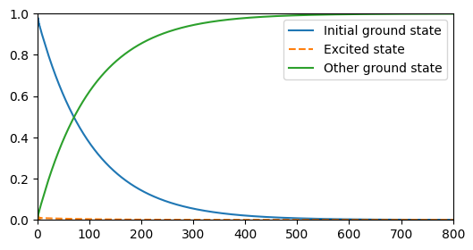

This notebook can be found on github
Raman Transition of a $\Lambda$-scheme Atom
Consider a three-level atom with two ground states and one excited state ($\Lambda$-scheme), which decays only to one of the ground states. The atom is initially prepared in one of its ground states (the one it does not decay into). A Raman transition occurs when the transition from the initial ground state to the excited state is driven by a laser that is far detuned from the transition, but matches the energy difference between the two ground states. In this case, the atom is driven from the initial ground state to its other ground state without ever populating the excited state (even though no direct transition between the two ground states is possible).
This system is described by the Hamiltonian
$H = \Delta_2|2\rangle\langle2| + \Delta_3|3\rangle\langle3| + \Omega\left(\sigma_1 + \sigma_1^\dagger\right),$
where $|1\rangle$ is the initial ground state with energy 0, $|2\rangle$ is the excited state and $|3\rangle$ is the final ground state. The detunings $\Delta_{2,3}$ are with respect to the laser driving the transition $|1\rangle\to|2\rangle$. Matching the laser frequency to the energy difference between $|1\rangle$ and $|3\rangle$ means $\Delta_3=0$. The laser has the amplitude $\Omega$ and drives the transition with the operators $\sigma_1=|1\rangle\langle2|$.
The decay is given by the Lindblad super-operator
$\mathcal{L}[\rho] = \frac{\gamma_3}{2}\left(2\sigma_3\rho\sigma_3^\dagger - \sigma_3^\dagger\sigma_3\rho - \rho\sigma_3^\dagger\sigma_3\right),$
where $\gamma_3$ is the rate of decay and $\sigma_3=|3\rangle\langle2|$. As always, the first step is to import the libraries we will use.
using QuantumOpticsusing PyPlotNext, we define the parameters we need.
# Parametersγ₃ = 1.Ω = .5γ₃Δ₂ = 5γ₃Δ₃ = 0.0tmax = 800/γ₃dt = 0.1tlist = [0:dt:tmax;]In this example, we make use of the N-level basis, which we initialize by passing the number of levels of our atom. We then define the respective transition operators.
# Basis and operatorsb = NLevelBasis(3)σ₁ = transition(b, 1, 2)σ₃ = transition(b, 3, 2)proj₂ = transition(b, 2, 2)proj₃ = σ₃*dagger(σ₃)This makes it easy to write down the Hamiltonian and the Jump operators. We also initialize the atom in state $|1\rangle$.
# Hamiltonian and jump operatorsH = Δ₂*proj₂ + Δ₃*proj₃ + Ω*(σ₁ + dagger(σ₁))J = [sqrt(γ₃)*σ₃];# Initial stateψ₀ = nlevelstate(b, 1)Since we are only interested in the state populations, i.e. three different expectation values, we can save memory by passing an output function as additional argument to the master equation solver. This will evaluate the function rather than returning a density matrix for each time-step, and so we simply write a function that calculates the expectation values of interest and returns them with the corresponding list of times.
# Expectation valuesfunction calc_pops(t, ρ) p1 = real(expect(σ₁*dagger(σ₁), ρ)) p2 = real(expect(proj₂, ρ)) p3 = real(expect(proj₃, ρ)) return p1, p2, p3endNow, we pass everything to the master equation solver.
# Time evolutiontout, pops = timeevolution.master(tlist, ψ₀, H, J; fout=calc_pops)Finally, all that is left to do is to plot the result.
# Reshape popsp1 = [p[1] for p=pops]p2 = [p[2] for p=pops]p3 = [p[3] for p=pops]# Plotsfigure(figsize=(6, 3))plot(tout, p1, label="Initial ground state")plot(tout, p2, "--", label="Excited state")plot(tout, p3, label="Other ground state")axis([0, tmax, 0, 1])legend()